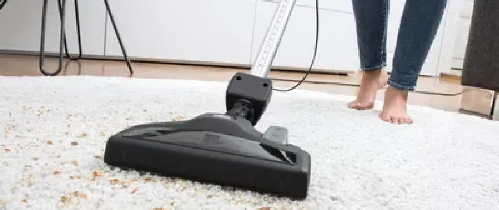

Почему нужно регулярно очищать ковры?
Красивый ковер создает уютную атмосферу в доме, расставляет акценты и помогает сохранить ноги в тепле. При этом текстильное ковровое покрытие не только выглядит привлекательно, но и делает передвижение по полу более безопасным и бесшумным. Уход за ковровым покрытием может быть более или менее простым в зависимости от длины ворса. Кроме этого, необходимые трудозатраты зависят от степени нагрузки на покрытие. Любой ковер нуждается в регулярной и тщательной очистке: благодаря ей сохраняется его привлекательный внешний вид, увеличивается срок службы и поддерживается требуемый уровень гигиены, так как в процессе очистки растворяется глубоко въевшаяся грязь, удаляется шерсть животных и опасные для здоровья пылевые клещи
Регулярная очистка пылесосом
Ковер следует тщательно пылесосить не реже одного раза в неделю независимо от длины ворса. Как правило, пылесосы оснащены переключаемой насадкой для пола с двумя положениями — для твердых и ковровых напольных покрытий. Для ковров с длинным ворсом следует использовать гладкую щетку для ковров, в противном случае возможно отделение волокон. При очистке текстильных напольных покрытий с фиксированной укладкой, отличные результаты показывает турбощетка. В целом, действует правило: при очистке коврового покрытия с помощью пылесоса работайте медленно и перемещайте щетку по полу равномерно
Если в доме есть дети или домашние животные, рекомендуется время от времени обрабатывать ковровое покрытие с помощью аккумуляторной швабры или аккумуляторного пылесоса